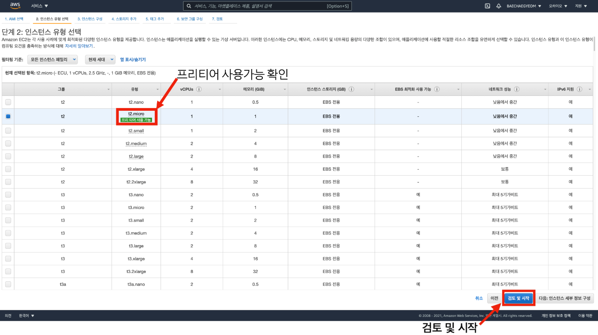

EC2 Instance 생성
1. EC2 Instance 생성
AWS에서 EC2 Instance를 생성하는 방법을 사진과 함께 순차적으로 설명한다.

AWS 메뉴에서 EC2 서비스를 검색하고 접속하여 인스턴스 시작 버튼을 클릭하여 인스턴스 생성을 시작한다.
원하는 운영체제와 버전을 확인하고 용도에 맞게 AMI를 선택한다.
프리 티어 사용 가능 태그를 확인하여 과금이 되지 않도록 설정할 수 있다.

인스턴스 유형을 선택하는 과정으로 생성하는 인스턴스의 CPU, RAM, 용량에 대한 선택이 가능하다.
프리 티어 사용 가능 태그를 확인하여 과금이 되지 않도록 설정할 수 있다.
검토 및 시작 버튼을 클릭하였다면 위와 같은 화면이 보이는데 원격접속을 위해서 필요한 Key를 생성하고 다운로드하는 과정이다.
생성되는 인스턴스를 원격으로 제어하기 위해서는 SSH 연결을 통한 원격접속이 필요하다.
새 키 페어 생성 메뉴를 확인한 후 키 페어의 이름을 정한 뒤 키 페어를 다운로드하면 인스턴스 시작 버튼이 활성화된다.
인스턴스 생성 마지막 단계에서 다운로드 한 파일은 SSH 통신을 위한 키 페어 중 프라이빗 키가 기록된 파일로 .pem 확장자를 가지고 있다.
해당 키 페어 파일은 EC2 인스턴스에 연결을 할 때 사용하는 암호가 담긴 파일로 관리에 유의해야 한다.
많은 인스턴스가 생성되어 있는 경우 인스턴스를 생성하면서 알려주는 인스턴스 ID를 통해 인스턴스를 구분할 수 있다.
우측 하단의 인스턴스 보기 버튼을 클릭하면 아래 사진과 같이 생성한 인스턴스를 확인할 수 있다.
인스턴스 탭에서 생성된 인스턴스를 확인할 수 있다.
인스턴스 ID를 통해 인스턴스를 구분할 수 있지만 생성된 인스턴스가 많아지는 경우 알아보기 힘들 수 있다.
Name 컬럼에서 해당 인스턴스의 이름을 알아보기 쉽도록 설정해두면 각 인스턴스를 구분하기 용이해진다.
SSH
SSH 프로토콜은 서로 다른 PC가 인터넷과 같은 Public Network를 통해 통신을 할 때 보안상 안전하게 통신을 하기 위한 통신 규약이다.
주고받는 데이터를 암호화해서 해당 키 페어를 가지지 않은 사람은 통신되는 데이터를 알아볼 수 없기 때문에 보안상 안전한 통신 방법이다.